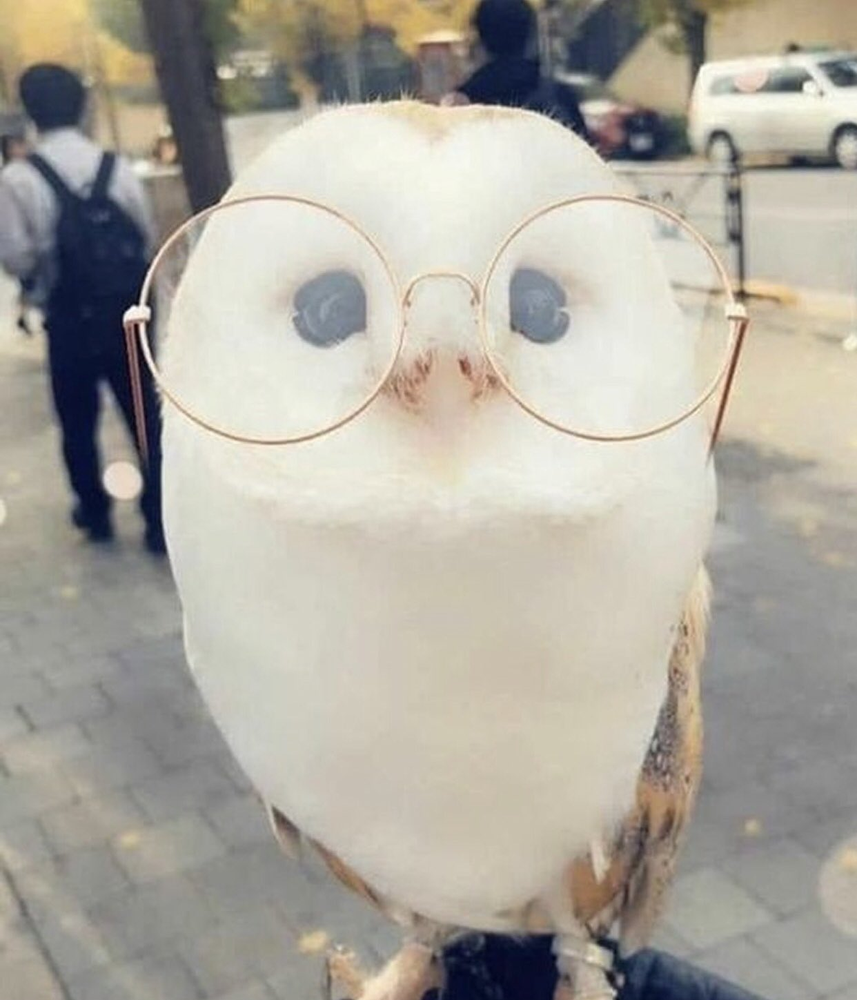

You are here to learn more about owls, aren't you?
Owls are birds from the order Strigiformes, which includes over 200 species of mostly solitary and nocturnal birds of prey typified by an upright stance, a large, broad head, binocular vision, binaural hearing, sharp talons, and feathers adapted for silent flight. Exceptions include the diurnal northern hawk-owl and the gregarious burrowing owl. Owls are divided into two families: the true (or typical) owl family, Strigidae, and the barn owl and bay owl family, Tytonidae.[2] Owls hunt mostly small mammals, insects, and other birds, although a few species specialize in hunting fish. They are found in all regions of the Earth except the polar ice caps and some remote islands. A group of owls is called a "parliament".
Click here to see cute things